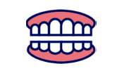

-
2024.12.25
1月の診療日
祝日の関係で、1月15日(水)は診療致します。
-
2024.12.15
年末年始の休診日
12月30日午後から1月5日まで休診となります。
-
2024.11.25
12月の休診日
12月6日(金)の診療は、午後休診になります。
患者さんの口腔健康を第一に考えます
私たちは、単に「治療」をするだけではなく、患者さんの口腔内全体の健康を総合的に考えています。口腔の健康は全身の健康とも深く関わっており、虫歯や歯周病が放置されると、糖尿病や心疾患などのリスクも高まります。そのため、一時的な痛みの解消ではなく、「生涯にわたる健康な歯」を目指し、患者さん一人ひとりに最適なケアを提供します。
予防歯科に力を入れ、虫歯や 歯周病などの疾患を未然に防ぎます
「痛くなってから歯医者に行く」ではなく、「痛くならないために歯医者に行く」ことが重要です。当院では、定期検診・クリーニング・フッ素塗布・歯磨き指導などを通じて、患者さんが虫歯や歯周病にならないようサポートします。また、生活習慣のアドバイスや、患者さんに合ったセルフケアの方法も積極的にお伝えし、患者さん自身が「健康な歯を守る力」を身につけられるよう支援します。
患者さんの症状や状態に応じた、 適切かつ最新の治療を提供します
口腔の状態や症状は、患者さん一人ひとり異なります。そのため、私たちは患者さんの現在の状態を詳しく診断し、最適な治療方法を選択します。また、最新の歯科医療技術を取り入れ、できるだけ痛みが少なく、負担の少ない治療を心がけています。例えば、レーザー治療・セラミック治療・デジタル印象採得 など、新しい技術を駆使しながら、より精密で快適な治療を提供しています。
患者さんとの信頼関係を築き、 コミュニケーションを大切にしています
「歯医者は怖い」「何をされるのかわからない」―― こうした不安を抱えている方も多いかもしれません。当院では、患者さんが安心して治療を受けられるよう、しっかりとした説明を行い、納得いただいた上で治療を進めます。また、患者さんの悩みや不安に耳を傾け、親身になって対応することで、信頼関係を築くことを大切にしています。
患者さんのニーズや希望を尊重し、 共に治療計画を立てます
「歯をできるだけ削りたくない」「見た目の美しさも大事にしたい」「費用を抑えたい」など、患者さんの希望はさまざまです。当院では、画一的な治療ではなく、患者さんのライフスタイルや価値観に合わせた治療プランを提案します。そのために、カウンセリングを重視し、治療の選択肢をわかりやすく説明しながら、一緒に最適な治療方針を決めていきます。
-
むし歯治療
- ︎歯が痛い
- 歯がしみる
- 歯に穴があいた
-
小児歯科
- 乳歯の生え替わりが上手くいかない
- ︎子供の歯の治療をしたい
- 仕上げ磨きを嫌がる
-
予防歯科
- 定期検診やクリーニングをしたい
- 正しい歯磨き方法を知りたい
- むし歯を予防したい
-
歯周病治療
- ︎歯茎から血が出る
- 口臭が気になる
- 歯がぐらつく
-

入れ歯(義歯)
- ︎入れ歯が合わない
- 新しい入れ歯を作りたい
- 見た目が気になる
-
歯科口腔外科
- ︎親知らずが痛い
- 顎が痛い、口が開きにくい
- 口の中にできものがある
-
審美治療
- 歯を白くしたい
- 被せ物を白くしたい
- 歯の形を整えたい
-
矯正歯科
- 歯並びや噛み合わせが気になる
- 歯の隙間が気になる
- 子供の歯並びが心配
こんにちは、吹田歯科医院院長の吹田
晴一（すいたせいいち）です。
当院では、患者さん一人ひとりの口腔健康を第一に考え、最適な治療を提供することを心がけています。歯の痛みや口腔の悩みは、日常生活に大きな影響を与えるものです。そのため、治療だけでなく予防やお口の健康管理にも力を入れ、患者さんが笑顔で生活できるようサポートしています。
また、私たちは、患者さんとの信頼関係を大切にし、しっかりとしたカウンセリングを通じて、治療方法を共有し、一緒に治療計画を立てていきます。何か不安なことや分からないことがあれば、遠慮せずにご相談ください。
当院は最新の医療技術と、温かいスタッフと共に、あなたの口腔健康をサポートし、笑顔あふれる未来を作るお手伝いをしていきます。どうぞよろしくお願いいたします。
吹田歯科医院院長吹田 晴一